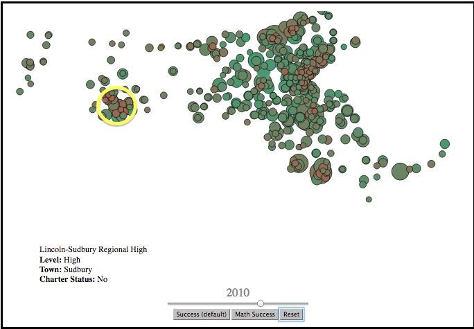
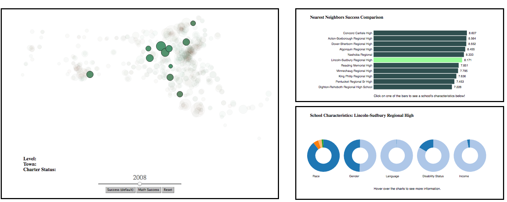
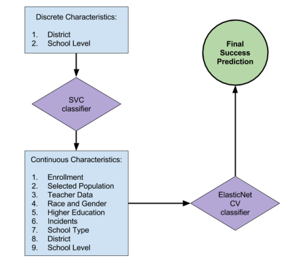
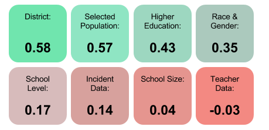
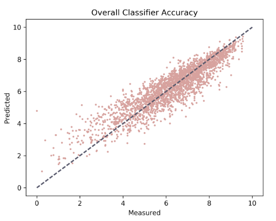

Summary
Over the course of the semester, we wanted to examine what characteristics affect the way that students test in public schools in Massachussets. As before (in Blog Post II), we used a success metric based on student-level test data for each school. We defined the success metric as follows:
+
(sum of math score by each student that year) ⁄ (Number of students who took the maths test)
Ultimately, we settled on the following questions:
- What is the impact of location on public school success?
- Which characteristics are the most important in determining a school’s success?
- Given certain characteristics, how accurately can we predict how well such a school will succeed?
- How similarly do schools with alike characteristics perform?
Map Visualization
Since our third and fourth blog post, we have improved our map visualization such that the final version allows the user to observe changes in success over time (2002-2014). Additionally, we have scaled the bubble sizes to the size of the schools. We removed english success because there was no data before 2006. From this map we were able to observe that success clearly increases over time as there is a dramatic increase in the number of green schools (representing better performing schools) over time. Additionally, we were able to gain insights related to the question of how location impact success because we can see there are some clusters of schools that are underporming such as in Springfield (circled in yellow above), Boston, Fall River and New Bedford.

K-Nearest Neighbor
K-Nearest Neighbor is our most recent addition to our analysis, which address how schools with alike characterstics perform. We wrote an algorithm that computed each school’s 10 “nearest neighbors” for any given year based on schools’ observable characteristics. For a given year, we obtained a matrix of school characteristics, where each row was a school and each column was a feature. We used sklearn’s MinMax normalization with feature_range=(0,1) on each of the features in the array so that no one feature would be weighted more heavily than any of the others in our neighbors calculation. Then, for each school, we calculated the difference between that school’s normalized characteristics and every other school, and returned the first 10 schools an a list of schools sorted by their difference values.In the web app, a user can click on a specific school, as shown below, which will highlight the 10 schools most similar to the click school and display the success for each school along with a breakdown of socioeconomic and gender/race characteristics for each school when the user clicks on a bar in the success chart.
From this visualization we were able to observe that for some schools, the 10 most similar schools will perform similarly, as is shown in the image, while for other schools, the success varies among similar schools. Additionally, the map visualization feature allows us to observe whether or not schools that are similar are geographically close to each other. Similar to success, this is sometimes true and sometimes not.
Machine Learning Classifier
Over the semester, we have substantially improved our classifier accuracy, which predicts school success based on a number of school characteristics. The structure of our classifier is illustrated in the diagram below.

Our classifier has gone from 34% to 84% accuracy since our second blog post. Since our last blog post, we added district id as a feature, which significantly improved accuracy. Overall, we determined that school success is most directly correlated to district . Moreover, the fact that “Selected Population” and “Race and Gender” have such a high impact on how students test means that socio-economic circumstances affect a school’s success the most. One of our most surprising findings was that teacher data actually had a negative impact on the classifier: neither the student-teacher ratio nor the percentage of highly qualified teachers could be directly linked to increased school performance.
 